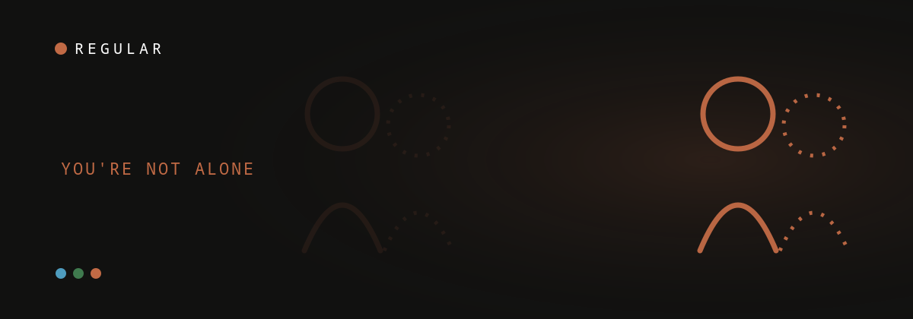

 VN
VNA note from Vadim — Three kids in, I’ve stood in that kitchen feeling like useful furniture. This one I didn’t have to research — I lived it. Why trust us.
If you feel invisible to your wife since the baby, you're not broken and you're not alone — a meta-analysis pooling 145,139 people across 49 studies found marital satisfaction drops sharply in the first year of parenthood, for fathers as well as mothers (Bogdan, Turliuc & Candel, 2022). It usually means her attention got pulled into survival mode, not that she loves you less. The fix is small daily reconnection, not one big talk.
You're standing in your own kitchen, holding the baby while she sleeps, and you can't shake the feeling that you've turned into furniture. Useful furniture — but furniture. You hand things over, you take the night shift, you do everything right, and somehow you feel like a guest in your own life.
That feeling has a name that thousands of new dads use for themselves: invisible. Not unloved, exactly. Just unseen. And almost nobody writes about it from your side, which is why you may have searched this at 2 a.m. and found a hundred articles about her recovery and none about yours.
This one's for you. Here's what's actually happening, why it lands so hard on dads, and the small moves that pull you back into focus.
What "feeling invisible" actually is
Feeling invisible after a baby is the experience of being physically present but emotionally unregistered — you're in the room, doing the work, but no longer the person she turns toward. It's extremely common: in a peer-reviewed study of first-time fathers, the men's central experience was being "present but invisible" — there for everything, yet sidelined and unseen (Hodgson et al., 2021).
It isn't in your head, and it isn't vanity. After birth, your partner's brain and body are rewired around one job: keeping a fragile newborn alive. The hormones, the shattered sleep, the constant low-grade alarm — none of it is a choice, and none of it is a verdict on you. But the practical result is that the beam of her attention narrows to the baby, and you're standing just outside it. It's easy to misread her pulling inward as pulling away from you — when it's really her nervous system in survival mode.
First-time fathers were "present but invisible" — highly appreciative of the care their partner and baby received, yet consistently ignored and side-lined themselves.Hodgson, Painter, Kilby & Hirst, 2021 (Healthcare)
people across 49 studies showed marital satisfaction drops sharply in the first year of parenthood — for both partners, fathers included.
Why it hits dads especially hard
It hits dads hard because the culture hands men no script for this. Mothers are surrounded by checkups, groups, and language for the transition; fathers are expected to "be strong" and quietly absorb it. So the loneliness goes underground, which psychologists say turns into numbness and detachment rather than a conversation.
New dads tend to suffer in silence on purpose. They don't want to complain when their partner is visibly carrying so much — so they say nothing, and the distance hardens.
"Many new dads don't want to tell their wives that they're feeling lonely because they don't want to complain when she's already dealing with a ton of new responsibilities. They'll suffer in silence."Charles Schaeffer, PhD, clinical psychologist (Fatherly)
And staying silent has a cost. Feeling isolated and believing you have to work it out alone is, in the words of Harvard/MGH psychologist Raymond Levy, "a uniquely male view that can lead to numbness and detachment." The invisibility you feel can quietly become invisibility you perform — pulling back, going quiet, becoming exactly the roommate you were afraid of becoming. When that gap opens, some men quietly lean on a screen instead of their partner — worth knowing whether an AI companion actually helps or just widens the distance.
of fathers experience depression in the perinatal year (and 5–15% anxiety) — yet in interviews men routinely questioned whether their own distress was even legitimate, holding back so as not to take attention from their partner. That silence is exactly how invisibility hardens.
What doesn't work (and why)
Waiting for her to notice, dropping hints, and staging one big emotional talk almost never work in the newborn year. She has no spare bandwidth to decode hints, and a heavy conversation dropped on an exhausted person reads as "one more demand." The moves that fail all share a flaw: they ask her to do the noticing.
Here's the pattern dads describe over and over. You wait quietly, hoping she'll see you struggling — but she's running on empty and has nothing left to scan the room with. You give advice about the baby — and it gets shot down, so you feel even more useless. You reach for her physically — and a tired "not now" lands like rejection. You finally sit her down for The Big Talk — and pick the worst possible moment, so all she hears is pressure.
None of these make you a bad partner. They just put the work on the person with the least capacity right now. The moves that actually land flip that — they're small, specific, and led by you.
| Timeline | What's normal | What to watch for |
|---|---|---|
| 0–3 months | Feeling sidelined, low intimacy, survival mode for both of you | — |
| 3–6 months | Still common; the dad-depression peak (~9% at 3–6 mo) | Flatness most of the day for 2+ weeks → talk to a pro |
| 6–12 months | Should be slowly easing if you're reconnecting daily | No change at all → name it together, consider counseling |
| 12+ months | Connection rebuilding for most couples | Still feeling like roommates → couples support helps |
What actually helps tonight
What helps is replacing the wait with one small, dad-led move: name the transition out loud, ask for one specific ten-minute thing, and repeat it daily. Small beats grand here — the post-baby dip is real and well-documented across the research (Bogdan et al., 2022), but it's the everyday reconnecting, not one big talk, that pulls a couple back.
- Name the transition, not the blame. "Everything changed when the baby came, and I want to figure out how we stay us, too." You're describing the season, not accusing her — so her guard drops instead of going up.
- Trade the feeling for one specific request. Swap "I feel disconnected" for "Can we take ten minutes after she's down tonight, just us?" Specific is easy to say yes to; vague feels like one more thing to manage.
- Start a five-minute daily check-in. Not logistics, not the baby. Five minutes of "how are you, actually." If you don't know where to start, use a structured prompt instead of waiting for the mood.
- Name one appreciation a day. A steady stream of small, specific appreciations does more for closeness than rare grand gestures. One honest "you were amazing with her today" is the smallest habit that moves the needle.
- Give it weeks, not one talk. This doesn't resolve in a single conversation. A small nightly ritual, repeated, beats every big talk you'll ever attempt.
Frequently asked questions
Why do I feel invisible to my wife since she had the baby?
Because after birth her attention is biologically pulled toward keeping the baby alive — hormones, broken sleep, and constant vigilance — so the relationship runs on low power for a while. A meta-analysis of 145,139 people found marital satisfaction drops in the first year of parenthood for both partners (Bogdan, Turliuc & Candel, 2022). Feeling invisible is a signal to rebuild daily connection, not proof your marriage is failing.
Do other dads feel like a third wheel after a baby?
Yes. In a peer-reviewed study, first-time fathers' central experience of perinatal care was being "present but invisible" — there for everything, yet sidelined and unseen (Hodgson, Painter, Kilby & Hirst, 2021). It is one of the most common things new dads report, which is exactly why so little of the content online speaks to it.
Is feeling invisible a sign of depression in new dads?
Not necessarily, but it's worth watching. An estimated 5–10% of fathers experience depression in the perinatal year (and 5–15% anxiety), yet many quietly doubt whether their own distress is even legitimate and stay silent (Darwin et al., 2017). If the flatness lasts most of the day for two weeks or more, talk to a professional — feeling invisible is common, but persistent numbness deserves real support.
How long does feeling invisible after a baby last?
For most couples the hardest stretch is the first 12 months, when satisfaction drops sharply for both partners (Bogdan et al., 2022, a meta-analysis of 145,139 people). It usually eases through the second year — but only with intentional reconnection. Left alone, the distance can quietly harden.
What should I actually do about feeling invisible?
Name the transition instead of blaming her, swap vague feelings for one small specific request, and start a five-minute daily check-in that isn't about logistics or the baby. A structured tool like Regular gives you the prompt and opening line so reconnecting becomes a nightly habit rather than one hard talk you keep postponing.
Keep readingLonely as a new dad? Why it happens and what helps · Dead bedroom after baby: what's normal and what helps · How relationships actually work after a baby
Contributing editor at Regular, and a dad himself. Writes the honest, from-a-dad's-side pieces on closeness, sex and the messy first year.
About Regular — the relationship app for new dads, built by a small team of parents who needed it themselves. Small, science-backed moves with your partner, not big talks.